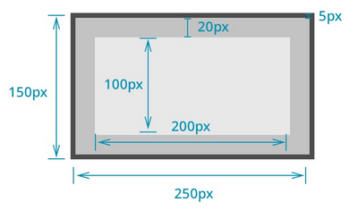
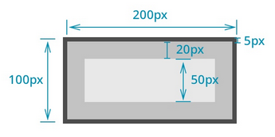

CSS 테두리 영역의 크기를 결정하는 속성
일반적으로 블록 요소의 크기는 바깥여백 + 테두리 + 안쪽여백을 합산한 값으로 결정
따라서, 기본적으로 설정한 가로/세로 크기 외 바깥여백 + 테두리 + 안쪽여백까지 계산되므로 실제 크기보다 더 커지게 되는 상황 발생 - 자칫 레이이웃을 엉망으로 만들 수도 있음
한편, border-box 속성을 이용하면 블록요소의 크기를 계산할때 전체 영역을 대상으로 바깥여백 + 테두리 + 안쪽여백도 포함시킴
단, 컨텐츠 영역은 실제 설정값보다 작아질수도 있음
일반적인 레이아웃 흐름은 마크업이 작성된 순서에 따라 요소는 위에서 아래로, 왼쪽에서 오른쪽으로 나열됨
하지만, float이라는 속성을 이용하면 특정요소를 기본적인 배치흐름에서 벗어나 페이지의 왼쪽이나 오른쪽으로 이동시킬 수 있음
즉, 문서의 흐름과 관계없이 화면배치를 유연하게 할 수 있음
복잡한 형태의 레이아웃을 구성하는데 필요한 핵심 속성
float 속성이 지정된 요소는 문서의 일반적인 흐름에서 벗어난 상태이기 때문에 뒤를 따르는 후속요소들은 다소 괴상한? 모습을 보여 줌
이러한 문제를 해결하기 위해서 clear 속성을 적용해 특정 요소 이후로는 float의 영향을 받지않도록 해야 함